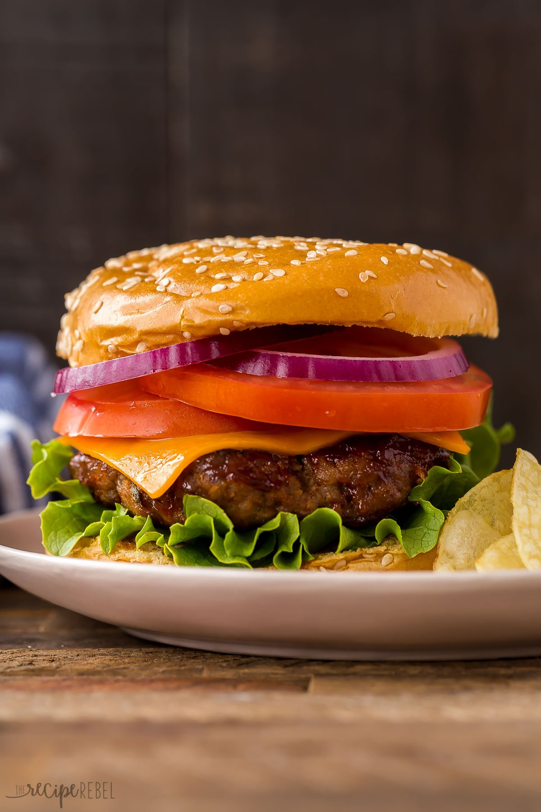

Basic Cheeseburger

The Basic Everyday Cheeseburger
Ingredients
- Ground Beef
- 3 Pepper Burger Season
- Buns
- Lettuce
- Tomato
- Cheddar Cheese
- Red Onion
- Mustard
Steps
- Mix 4 Tbsp Seasoning into Ground Beef
- Form beef into patties
- Cook patties in skillet with bacon fat
- While Cooking Patties Prepare the Bun by adding Lettuce, Onion, Tomato, and Mustard to top bun
- Place Cooked Patty on bottom bun, mount the top bun and Enjoy